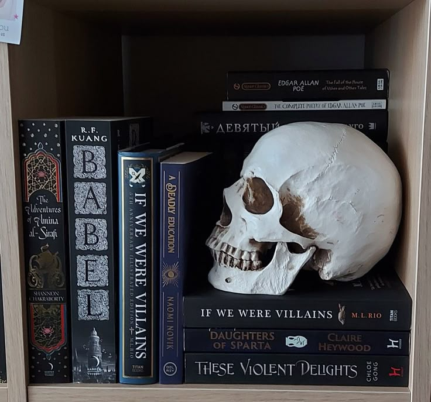
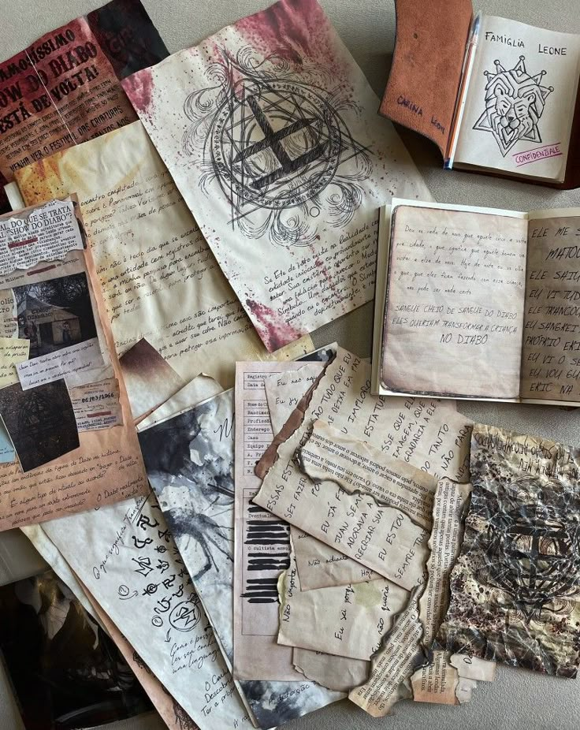
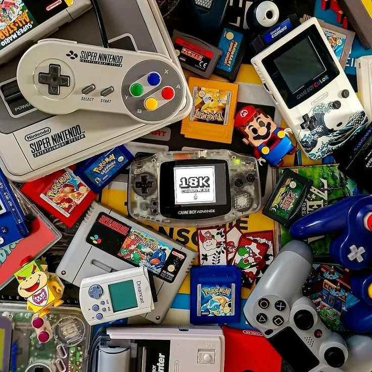

Meus projetos

Terror Books: Indicações de Livros.
Este projeto é uma página web que apresenta uma lista de novos lançamentos de livos de terror, contém também outra lista de livros mais vendidos. Há também uma observação sobre os atores do mês.

ParanormalFlix
Este projeto é um site onde é possivel assistir todos os episódios de um RPG chamado "Ordem Paranormal: Calamidade", feito por um youtuber famoso conhecido como Cellbit.

Jogos
Este projeto é sobre responder algumas perguntas de diferentes jogos.